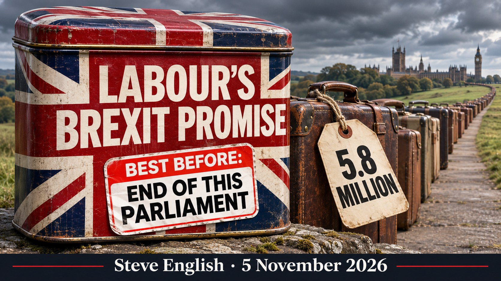

Labour's Brexit Promise Came With an Expiry Date. Free Movement Didn't.
Burnham wants an "evidence-based debate" on free movement. Here's the evidence, from his own Home Office.

- In May, Burnham was "not proposing" rejoining the EU. By September he was listing full membership as an option, and a referendum pledge in Labour's next manifesto is "possible"
- Labour's 2024 promise to keep Britain outside the EU now holds only "for the duration of this Parliament"
- 6.45 million people have applied to stay under the EU Settlement Scheme. In 2016 the official estimate was 3.6 million EU nationals living here
- 5.8 million have been granted status, and almost 2.9 million applications have arrived since the "deadline" passed
- 637,306 applications from family members joining after Brexit, and 540,600 non-European nationals have applied through an "EU" scheme
- 115,770 people have been handed permanent settlement by computer, with no caseworker involved
- The same Home Office doesn't know where tens of thousands of displaced care workers are (lost). Now it wants a "capped, temporary" youth scheme with Brussels
In May, Andy Burnham told the country he was "not proposing that the UK considers rejoining the EU" and that the last thing Britain should do was "re-run those arguments".
Four months later, as Prime Minister, he told Labour conference that Brexit had done "more harm than good" and blamed it for a loss of control over immigration and the economy. Asked by the BBC what came next, he ran through the menu: a customs union, the single market, "or we could go all the way". He confirmed that meant full membership. Asked whether an in-out referendum could go in Labour's next manifesto, he answered: "Yes, things are possible."
Since then, the backpedalling. "No, I'm not proposing that, am I?" A referendum "wouldn't be the right thing to do right now". Wanting Britain back in within his lifetime was "not necessarily the case" any more. A month later he was on breakfast television saying he would still like to see it in his lifetime. Last weekend he called for an "honest discussion" about free movement. This week he says he never proposed it.
He wants "an honest discussion" built on "a very factual, evidence-based debate". Fine. Here is the evidence.
Promises with an expiry date
Labour's 2024 manifesto was not vague. Britain would "stay outside of the EU". "There will be no return to the single market, the customs union, or freedom of movement." No small print. No time limit.
Burnham now repeats those commitments with a clause that was never in the manifesto: they hold "for the duration of this Parliament". Every time he uses them to reassure voters, he also confirms the date they run out.
Labour's promises to the British public come with an expiry date. The consequences of free movement do not.
The number nobody was told
In 2016 the Office for National Statistics estimated there were 3.6 million EU nationals living in Britain. That was the figure the country voted on.
The Home Office's own tables now record 6,450,400 people who have applied to stay under the EU Settlement Scheme. Of those, 5,824,530 have been granted status: 4,579,350 with permanent settled status and 1,245,190 with pre-settled status, most of whom are on the road to permanent settlement.
That is close to double the population the official figures said was here when Britain voted to leave.
The door that never shut
The scheme's deadline was 30 June 2021. Since then the Home Office has received 2,889,729 more applications.
Some are people who were already here upgrading their status. But 782,838 are late applications, and 295,858 of those have been granted. Another 637,306 are applications from family members joining after Brexit, and 263,027 of those have been granted.
It is not slowing down. In the year to June 2026, grants of settled status to joining family members more than doubled to 18,596, the highest since the deadline.
And the "EU" scheme is not only for Europeans. 540,600 non-European nationals have applied through it as family members.
Britain left the EU in 2020. Free movement's family tree is still growing in 2026.
Settlement by algorithm
Since January 2025 the Home Office has been upgrading people to permanent settled status automatically. A computer checks tax and benefits records. If the boxes are ticked, settlement is granted. No caseworker, no interview.
By June 2026, 115,770 people had been settled this way.
In the year to June 2026, the EU scheme accounted for 336,229 grants of settled status, almost two in every three of all grants of permanent settlement in Britain. Settlement grants overall hit their highest level in more than a decade.
Burnham says Brexit replaced temporary European migration with long-term settlement. His own Home Office is running the biggest settlement machine in the system, and it is the one free movement left behind.
Where they came from
Romania tops the table with 1,998,079 applications. Poland follows with 1,303,282, then Italy with 781,707, Portugal with 596,148, Bulgaria with 542,385 and Spain with 515,117.
Romanian applications alone have been refused 346,365 times. That is more refusals than the total number of applications from France.
20 November: free movement for the young in all but name
On 20 November Burnham goes to Brussels for the UK–EU summit. On the table is a "Youth Experience Scheme" letting under-30s from 27 EU countries live, work and study here for around three years. Brussels has signalled it would accept a cap of up to 150,000 a year.
The Government insists it will be capped, temporary and in Britain's interests. Labour said the same about its red lines. The EU Settlement Scheme was supposed to be a one-off process with a deadline. It has taken in 2.9 million applications since the deadline passed.
And "temporary" only means something if someone checks that people leave. The Home Office doesn't.
Parliament's Public Accounts Committee found the Home Office had not analysed exit checks since the Skilled Worker route opened in 2020. It does not know how many workers go home when their visas expire, or how many may be working illegally. More than 39,000 care workers were caught up when their sponsors lost their licences, and the Home Office admitted it had no estimate of how many displaced care workers are still in England. Of 28,621 it contacted, just 941 had found work with a legitimate employer by April 2025. The rest: the Home Office doesn't know where they are (lost).
Students are no different. The Home Office stopped publishing exit-check data in 2020. In the last year it did, it recorded 7,253 student overstays. In the year to June 2025, 14,800 asylum claims came from people who had arrived on student visas. Visitors from visa-free countries were never properly counted out at all.
Labour has been in power for more than two years. It has not restarted the count. Now it wants a new scheme built on the promise that young Europeans will go home on time.
The Home Office can't tell you who left. It can tell you who settled. 5.8 million and counting.
The evidence is in
Former Brexit minister David Jones, now with Reform UK, put it plainly: restoring free movement would "surrender an essential power of self-government". Former Cabinet minister Lord Redwood was blunter still: "We are not short of people. We are short of homes and jobs."
Burnham asked for an evidence-based debate. The evidence says free movement delivered close to double the number the country was told, kept delivering years after the door was meant to close, and is still being converted into permanent settlement by computer. His answer is to promise red lines that expire, float a referendum that is "possible", and open a youth door in Brussels that his Home Office has no way of policing.
Labour's promises come with an expiry date. The 5.8 million do not.
Want to Dive Deeper? Official sources you can link:
- Home Office — EU Settlement Scheme quarterly statistics tables, data to 30 June 2026 (applicants, grants, post-deadline applications, nationality): assets.publishing.service.gov.uk
- Home Office — How many Indefinite Leave (settlement and EUSS settled status) grants have been issued, year ending June 2026: gov.uk
- ONS — UK population by country of birth and nationality, 2016: ons.gov.uk
- Labour Party — Change: Labour Party Manifesto 2024: labour.org.uk
- BBC — Brexit referendum 'possible' in Labour election manifesto, says Burnham (30 Sept 2026): bbc.co.uk
- Reuters — Burnham says Britain should weigh post-Brexit EU options, including rejoining (30 Sept 2026): reuters.com
- Left Foot Forward — Burnham's May statement and "go all the way" (30 Sept 2026): leftfootforward.org
- ITV News — Burnham says UK's Brexit deal isn't 'good enough' but won't push to rejoin EU (26 Oct 2026): itv.com
- ITV News — Burnham: I have not proposed return to EU freedom of movement (3 Nov 2026): itv.com
- House of Lords European Affairs Committee — Youth Experience Scheme and the 20 November 2026 summit: committees.parliament.uk
- Cabinet Office — Explanatory memorandum on the youth experience scheme negotiations (scheme to be capped): assets.publishing.service.gov.uk
- Irish Times — Brussels open to 150,000 cap on post-Brexit youth mobility scheme (25 June 2026): irishtimes.com
- ONS — Long-term international migration, provisional, year ending December 2025 (EU net migration negative since 2022): ons.gov.uk
- House of Commons Public Accounts Committee — Immigration: Skilled worker visas: publications.parliament.uk
- ITV News — Home Office unaware how many migrants have overstayed skilled visas, MPs say (4 July 2025): itv.com
- Work Rights Centre — 39,000 workers affected by licence revocations; no Home Office estimate of displaced workers: workrightscentre.org
- Free Movement — 941 of 28,621 displaced care workers re-employed by April 2025: freemovement.org.uk
- Migration Observatory, University of Oxford — Unauthorised migration in the UK (exit checks discontinued, visitors not covered): migrationobservatory.ox.ac.uk
- StudyTravel Network — Student overstays (year to March 2020) and asylum claims from former student visa holders: studytravel.network
- Brexit Facts4EU — Report on EU Settlement Scheme approvals, with comments from David Jones and Lord Redwood (5 Nov 2026): facts4eu.org
 Scan to follow The British Lions Roar on Substack
Scan to follow The British Lions Roar on Substack
Editorial approach: This article is written in plain English, following George Orwell's rule: if you can say something simply, do so. It combines investigative reporting with policy analysis and opinion. Satire is used where appropriate to test ideas by applying them consistently. Facts are sourced; opinions are labelled; institutions are not indulged.
DISCLAIMER: Factual statements in this article are supported by cited sources. Analysis and interpretation are clearly presented as opinion. Nothing published here is intended to incite violence, harassment, or hatred, nor to cause harm. Disagreement with arguments or conclusions does not constitute harm or violence. Where Islamic doctrine or immigration/demographics are discussed, focus is policy and aggregate outcomes — not individuals by race, ethnicity or religion.